“Good coffee.
Good food.
A good place to pause.”
Nestled on the sunlit slope of Rua da Escola Politécnica, AMUN CAFÉ offers an unhurried haven in Lisbon. We pair carefully selected specialty coffee beans with honest, seasonal food prepared fresh in our kitchen.
Whether you stop by for a morning Flat White, a vibrant lunch bowl, or a quiet moment with a book, our space is designed for calm reflection and authentic flavor.
Read Our Story →Specialty Coffee Craft
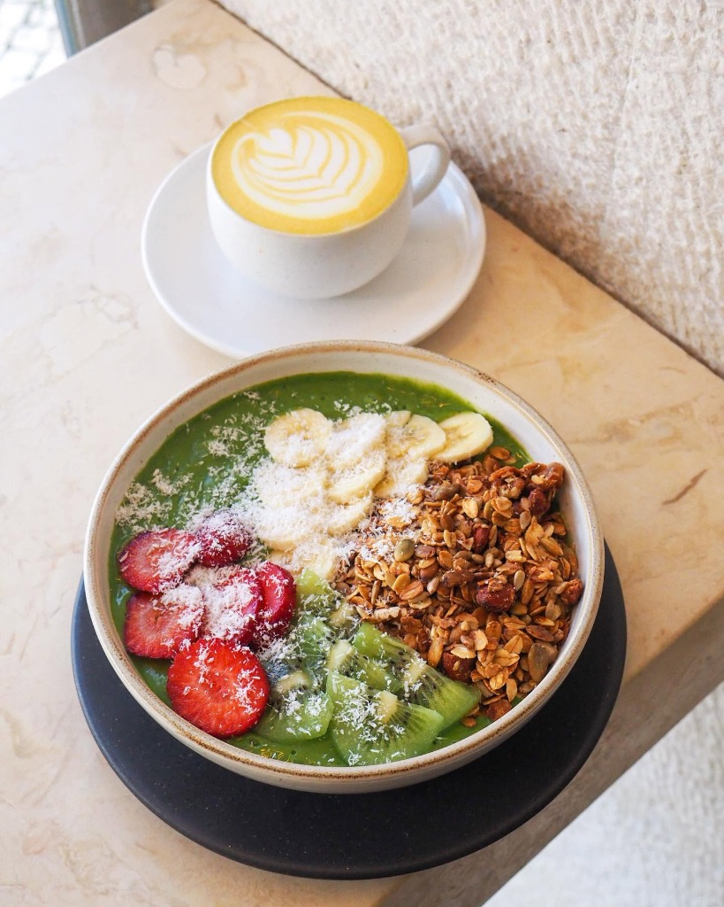
Espresso & Filter Craft
Featuring single-origin beans roasted for clarity. Prepared meticulously on our La Marzocco bar and manual V60 drip stations.
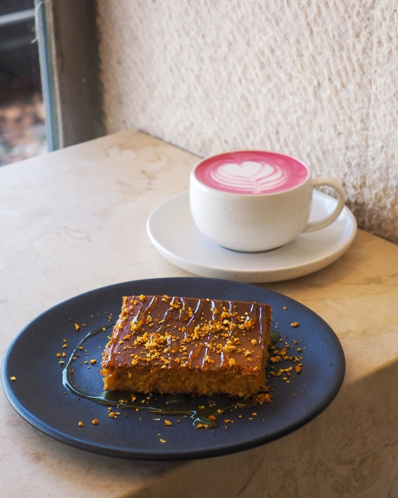
Golden & Pink Lattes
Wholesome plant-powered beverages including Matcha, Golden Turmeric Latte, and fresh Beetroot Latte topped with delicate foam art.
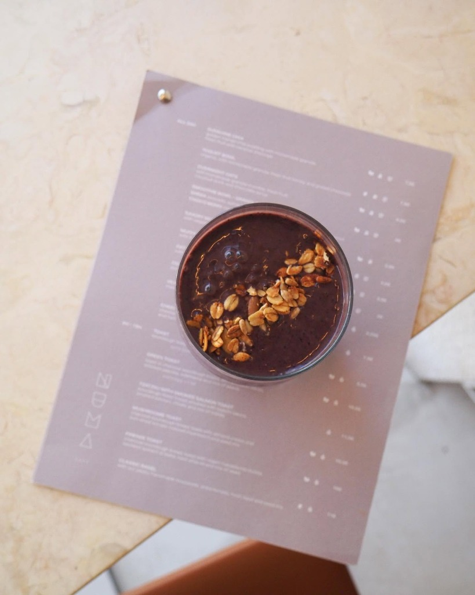
Smoothies & Cold Drinks
Blended smoothies packed with antioxidant berries, toasted seeds, organic oats, and daily fresh cold-pressed Portuguese fruit juices.
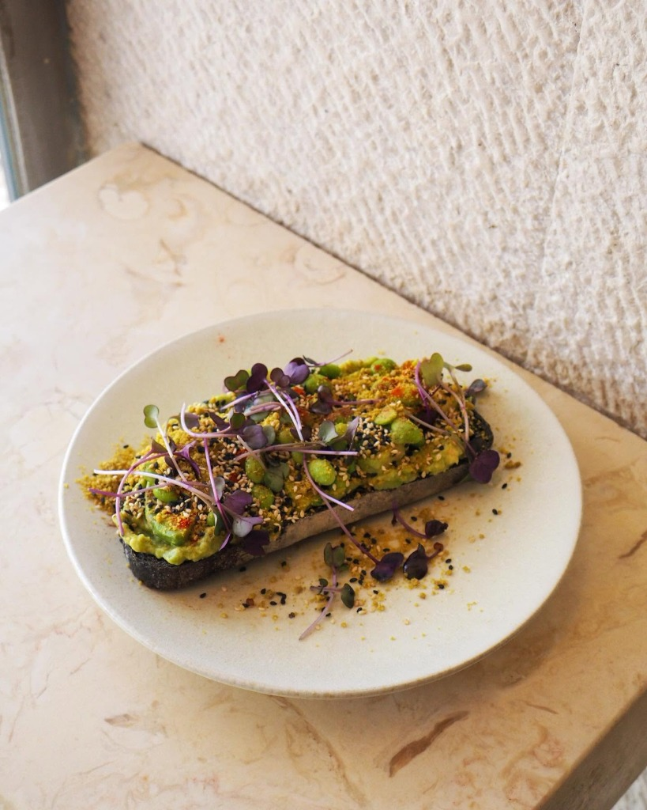
Honest, Vibrant Seasonal Food
Our kitchen celebrates fresh market ingredients sourced daily. From hearty sourdough toasts layered with velvety avocado to fresh fruit pancake platters and colorful salads, everything is crafted with care and intention.
Organic Produce
Farm-fresh greens, ripe avocados, and seasonal figs.
Artisanal Baking
Crusty country sourdough, freshly baked bagels, and pastries.
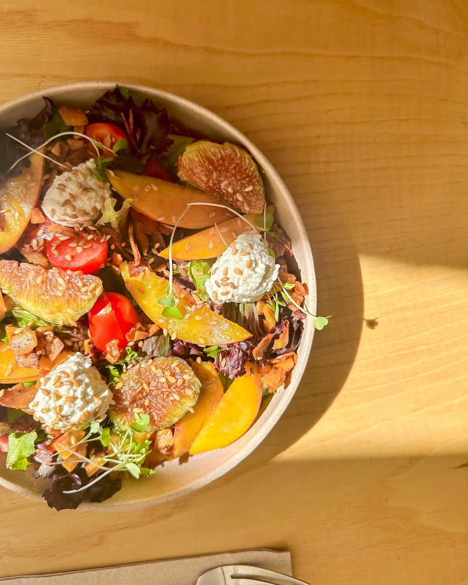
Fig & Peach Salad
Fresh seasonal figs, ripe peach slices, vegan ricotta, cherry tomatoes, and toasted sesame.
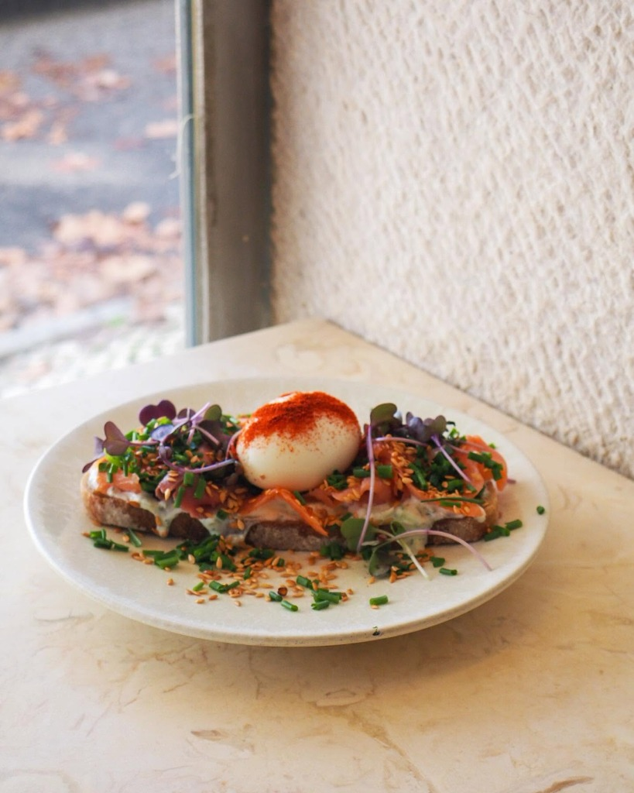
Salmon & Poached Egg Toast
Artisanal toasted sourdough, cured salmon, creamy spread, soft poached egg, chives, and paprika.
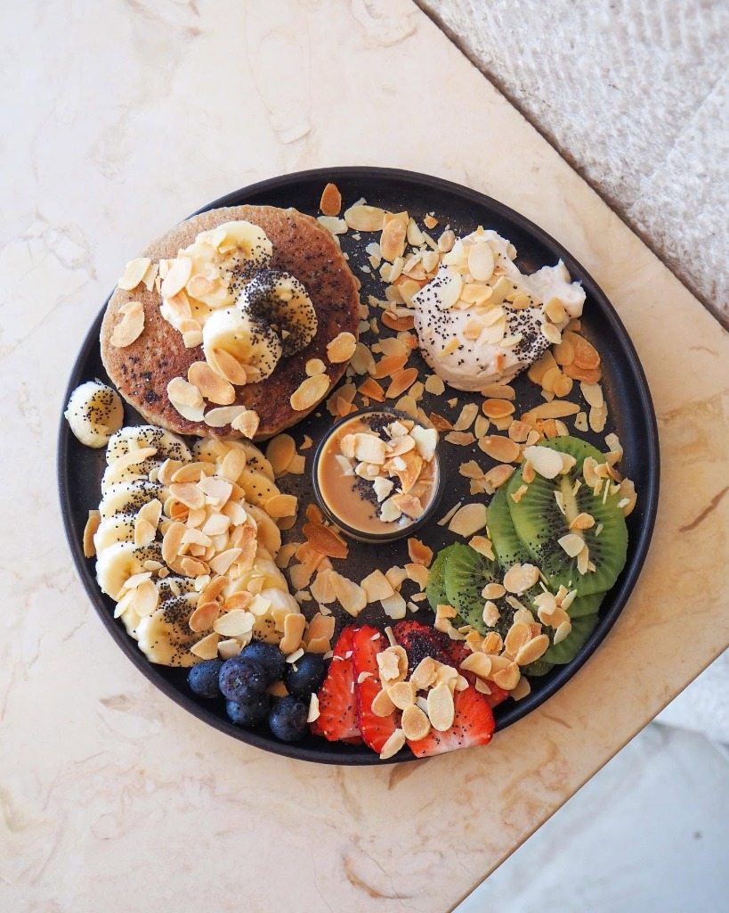
Fruit & Pancake Platter
Fluffy house pancake accompanied by kiwi, fresh strawberries, sliced banana, chia seeds, and flaked almonds.
Life at AMUN CAFÉ
A glimpse into our Lisbon haven — where specialty brewing, fresh seasonal plates, and warm architectural design meet.

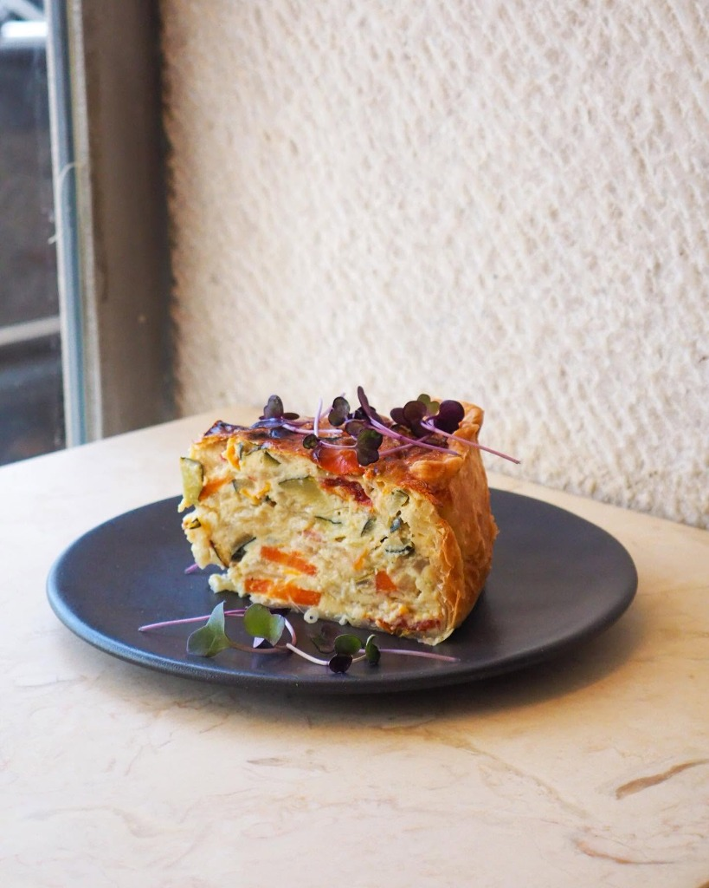
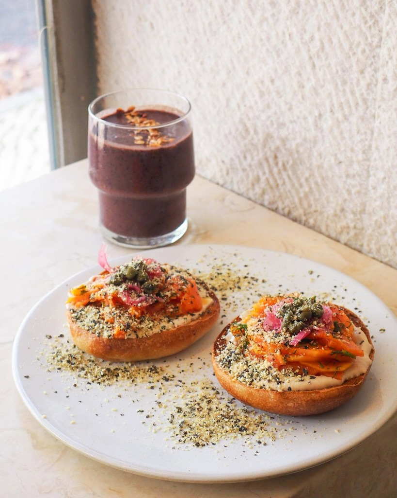
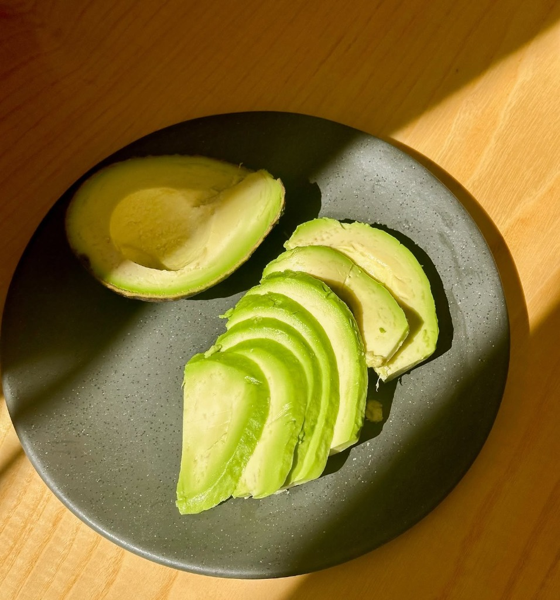
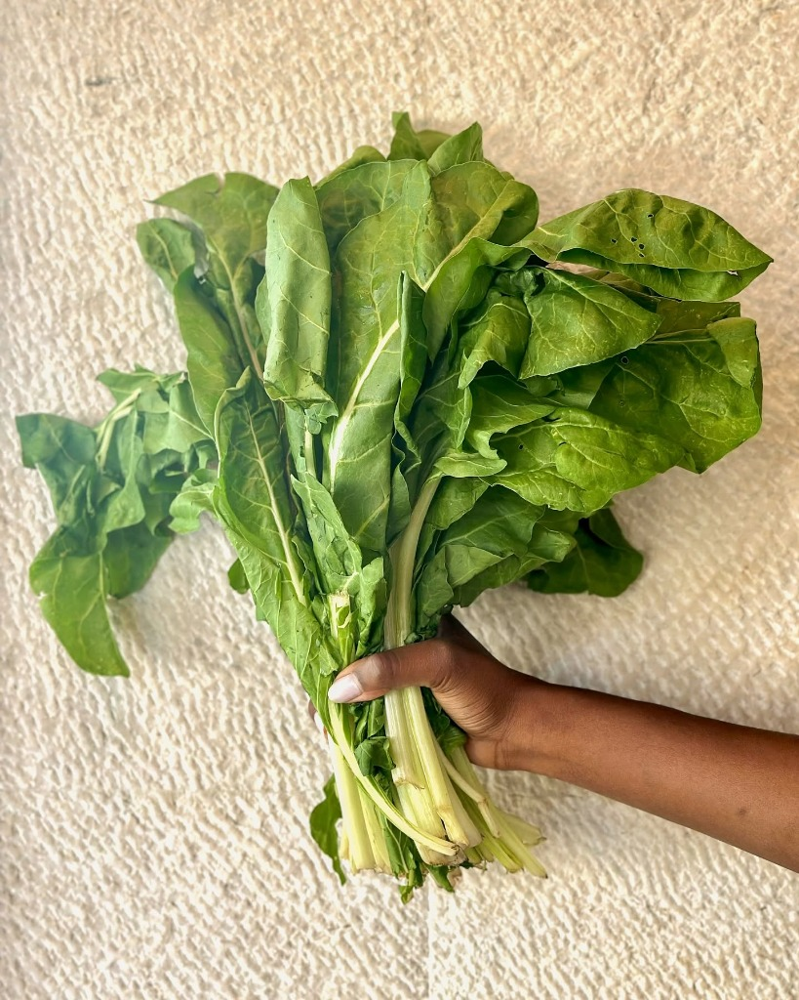
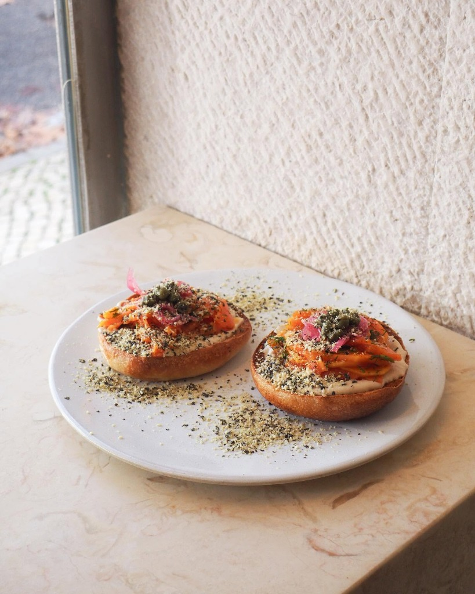

AMUN CAFÉ
Address
R. da Escola Politécnica 94
1250-100 Lisboa, Portugal
Phone • Direct Line
Neighborhood
Located along Rua da Escola Politécnica between Príncipe Real and Bairro Alto, just steps from the botanical gardens.
Connect With AMUN